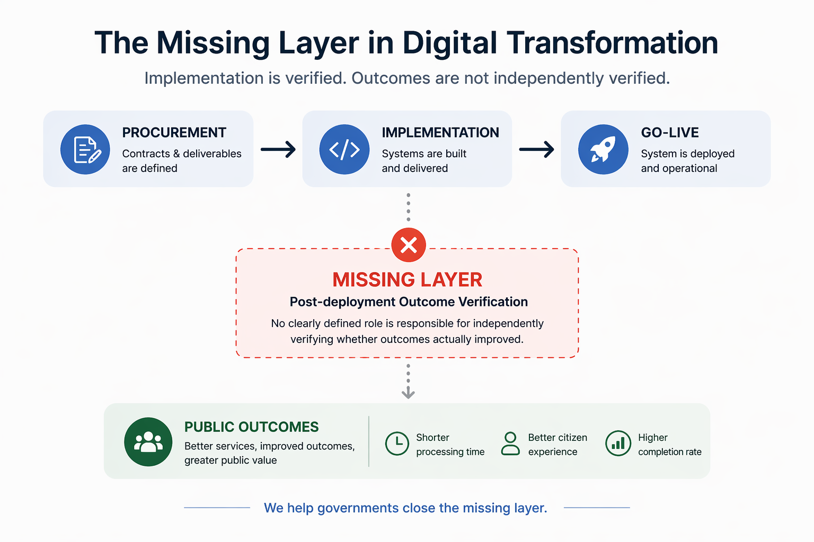
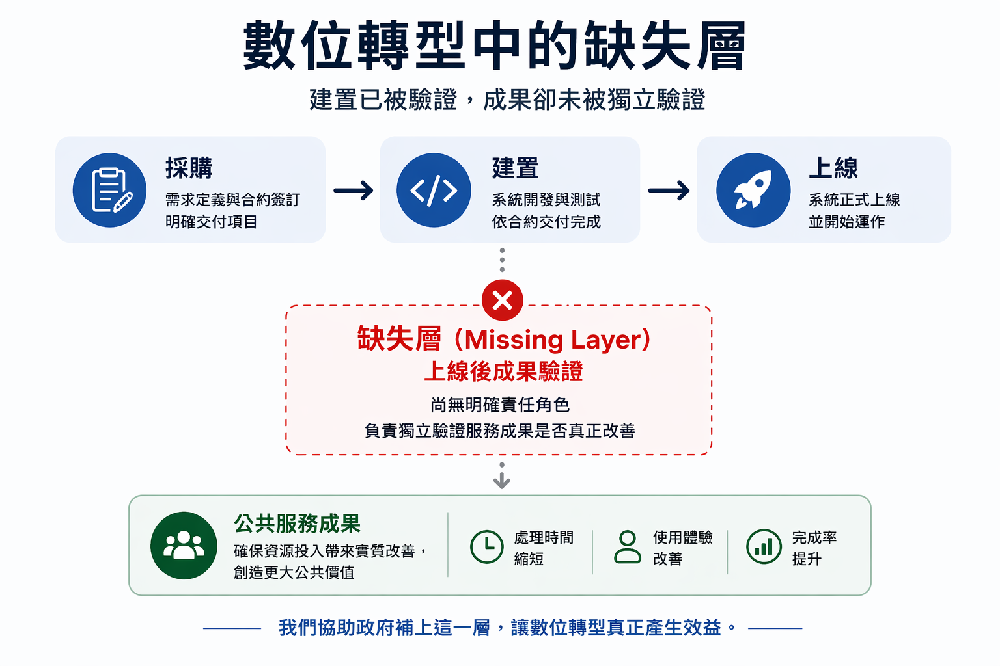

GFI Flow Intelligence
EN
繁
简
ES
Governance Legitimacy Framework
Diagnosing whether governance can be trusted
Aligned with
OECD/IDI Report (May 27, 2026)
·
EO 14402 (April 30, 2026)
Read full definition →
⚠️ EO 14402: OMB Missed the Deadline →
⚡ Where to Start
📊
New Essay
GDP Is a Half-Ledger
Why the world's most important economic metric is missing half the story
→
📘
New Book · 4 Languages
Who Walked Away with the Value?
Land, Infrastructure · GL Framework · 2026
→
📙
Free Book
Real Digital Transformation
Free PDF · 107 pages
→
🔍
New Tool
Pseudo-Digitalisation Module
GL Diagnostic · 5 indicators · Free
→
🎓
Diagnostic Report
Student Loans & AI Job Displacement
GL: 0.049 → 0.03 effective · Double Structural Failure
→
🛂
New Diagnostic · UK
ETA Border System Collapse
GL: 0.04–0.09 · Pseudo-Digitalisation · June 2026
→

📄 Three Essays on Governance Architecture →
⚠️ OMB MISSED THE DEADLINE
EO 14402 Guidance — Still Waiting
June 14 came and went. No guidance from OMB.
Procurement officers: your July 29 deadline is not moving.
Independent outcome verification is available now.
Read the analysis →
🔴 NEW ANALYSIS
Welfare Policy, Unintended Harm
The US just tightened SNAP work requirements.
Hundreds of thousands may lose food assistance.
A different approach: trust first, verify later.
Read in 4 languages →
📘 NEW ESSAY
The Big 4 and the Governance Failure
How Deloitte, PwC, EY, and KPMG took over government — and why governance now fails.
A structural diagnosis of "process success, delivery failure."
Read the essay →
🧠 SYSTEMS THINKING
Linear Stupidity: Why Control Policies Always Fail
Scared of investment leaving? Ban capital outflows. Then no one invests.
Scared of China getting chips? Ban exports. Then China makes its own.
A GL Framework diagnosis of why "ban it" policies always backfire.
Read the essay →
📚 TAINTER · GL FRAMEWORK
38 Years Later, the Same Ruler
In 1988, Joseph Tainter asked: why do complex societies collapse?
In 2026, the GL Framework measures what he could only describe.
A diagnosis of modern institutional failure — with a ruler.
Read the essay →
📖 NEW BOOK · 4 LANGUAGES
Performance Governance
How elections choose people who can't govern.
Lawyers, Big 4, and the structural failure of Western governance.
Engineers vs. lawyers · grassroots vs. performance · who should run a country?
Read the book →
No party. No ideology. Just math.
Case Studies & Analysis
Public Sector
For Government
Procurement, accountability, and outcome verification after deployment.
View page
→
Research & Institution
For University & Research
Train GL Verifiers, anchor methodology, build governance labs.
View page
→
Public Diagnostic
Public Case Diagnostic Demo
Structured cases from UK, Canada, Australia, US, Germany, Taiwan.
Explore cases
→
For Procurement Officers & Vendors
Add a 90-Day Outcome Verification Requirement to Your RFP
Get Procurement Insert →
Free Tools
Measure · Diagnose · Verify
GFI Check: IMCR + GL Level · Based on GEF (SSRN peer-reviewed)
Launch GFI Check →
🔍 Pseudo-Digitalisation Module →
治理正當性框架
診斷治理是否值得信任
對齊
OECD/IDI 報告 (2026年5月27日)
·
EO 14402 (2026年4月30日)
閱讀完整定義 →
⚠️ EO 14402: OMB 跳票了 →
⚡ 從這裡開始
📊
新文章
GDP 是半套帳本
為什麼全世界最重要的經濟指標漏掉了另一半
→
📘
新書 · 四語版
誰拿走增值？
土地、基建 · GL Framework · 2026
→
📙
免費書籍
真正的數位轉型
免費 PDF · 107頁
→
🔍
新工具
偽數位化診斷模組
GL 診斷 · 5項指標 · 免費
→
🎓
診斷報告
學貸與AI取代工作
GL: 0.049 → 0.03 · 雙重結構失效
→
🛂
新診斷報告 · 英國
ETA 邊境系統崩潰
GL: 0.04–0.09 · 偽數位化 · 2026年6月
→

📄 三篇治理架構論文 →
⚠️ OMB 跳票了
EO 14402 指引 — 仍在等待
6月14日已經過了。OMB 沒有發布指引。
採購官員：你的 7 月 29 日期限不會延後。
獨立成果驗證現在即可使用。
閱讀分析 →
🔴 新分析
福利政策，無意之傷
美國剛收緊SNAP工作要求。
數十萬人可能失去食物援助。
另一種做法：先信任，後審核。
閱讀四語版本 →
📘 新文章
Big 4 與西方治理失靈
Deloitte、PwC、EY、KPMG 如何接管政府——以及治理為何失敗。
「流程成功，交付失敗」的結構性診斷。
閱讀文章 →
🧠 系統思維
線性腦殘：為什麼控制性政策永遠失敗
怕投資跑掉？禁止資金外流。然後沒人敢投資。
怕中國拿到晶片？禁止出口。然後中國自己做。
GL 框架診斷：為什麼「禁止它」的政策總是反效果。
閱讀文章 →
📚 泰恩特 · GL 框架
38年後，同一把尺
1988年，約瑟夫·泰恩特問：為什麼複雜社會會崩潰？
2026年，GL 框架測量了他只能描述的東西。
現代制度失靈的診斷——帶著一把尺。
閱讀文章 →
📖 新書 · 四語版
表演治國
選舉如何選出不會治理的人。
律師、Big 4、西方治理的結構性失靈。
工程師 vs 律師 · 基層歷練 vs 表演 · 誰應該管國家？
閱讀本書 →
無黨無派。只有數學。
個案研究與分析
公部門
政府入口
聚焦採購、問責與部署後成果驗證。
查看頁面
→
研究與機構
大學與研究入口
培訓 GL 驗證師、錨定方法論、建立治理實驗室。
查看頁面
→
公共診斷
公共案例診斷示範
英國、加拿大、澳洲、美國、德國、台灣的結構化案例。
瀏覽案例
→
給採購官員與 Vendor
在你的 RFP 中加入90天成果驗證要求
取得採購條款 →
免費工具
衡量 · 診斷 · 驗證
GFI Check: IMCR + GL Level · 基於 GEF (SSRN 同儕審查)
開啟 GFI Check →
🔍 偽數位化診斷模組 →
治理正当性框架
诊断治理是否值得信任
对齐
OECD/IDI 报告 (2026年5月27日)
·
EO 14402 (2026年4月30日)
阅读完整定义 →
⚠️ EO 14402: OMB 跳票了 →
⚡ 从这里开始
📊
新文章
GDP 是半套账本
为什么全世界最重要的经济指标漏掉了另一半
→
📘
新书 · 四语版
谁拿走了增值？
土地、基建 · GL Framework · 2026
→
📙
免费书籍
真正的数字转型
免费 PDF · 107页
→
🔍
新工具
伪数字化诊断模块
GL 诊断 · 5项指标 · 免费
→
🎓
诊断报告
学贷与AI取代工作
GL: 0.049 → 0.03 · 双重结构失效
→
🛂
新诊断报告 · 英国
ETA 边境系统崩溃
GL: 0.04–0.09 · 伪数字化 · 2026年6月
→
📄 三篇治理架构论文 →
⚠️ OMB 跳票了
EO 14402 指引 — 仍在等待
6月14日已经过了。OMB 没有发布指引。
采购官员：你的 7 月 29 日期限不会延后。
独立成果验证现在即可使用。
阅读分析 →
🔴 新分析
福利政策，无意之伤
美国刚收紧SNAP工作要求。
数十万人可能失去食物援助。
另一种做法：先信任，后审核。
阅读四语版本 →
📘 新文章
Big 4 与西方治理失灵
Deloitte、PwC、EY、KPMG 如何接管政府——以及治理为何失败。
「流程成功，交付失败」的结构性诊断。
阅读文章 →
🧠 系统思维
线性脑残：为什么控制性政策永远失败
怕投资跑掉？禁止资金外流。然后没人敢投资。
怕中国拿到芯片？禁止出口。然后中国自己做。
GL 框架诊断：为什么「禁止它」的政策总是反效果。
阅读文章 →
📚 泰恩特 · GL 框架
38年后，同一把尺
1988年，约瑟夫·泰恩特问：为什么复杂社会会崩溃？
2026年，GL 框架测量了他只能描述的东西。
现代制度失灵的诊断——带着一把尺。
阅读文章 →
📖 新书 · 四语版
表演治国
选举如何选出不会治理的人。
律师、Big 4、西方治理的结构性失灵。
工程师 vs 律师 · 基层历练 vs 表演 · 谁应该管国家？
阅读本书 →
无党无派。只有数学。
案例研究与分析
公共部门
政府入口
聚焦采购、问责与部署后成果验证。
查看页面
→
研究与机构
大学与研究入口
培训 GL 验证师、锚定方法论、建立治理实验室。
查看页面
→
公共诊断
公共案例诊断示范
英国、加拿大、澳大利亚、美国、德国、台湾的结构化案例。
浏览案例
→
给采购官员与 Vendor
在你的 RFP 中加入90天成果验证要求
获取采购条款 →
免费工具
衡量 · 诊断 · 验证
GFI Check: IMCR + GL Level · 基于 GEF (SSRN 同行评审)
开启 GFI Check →
🔍 伪数字化诊断模块 →
Marco de Legitimidad Gubernamental
Diagnosticando si la gobernanza puede ser confiable
Alineado con
Informe OECD/IDI (27 de mayo de 2026)
·
EO 14402 (30 de abril de 2026)
Leer definición completa →
⚠️ EO 14402: La OMB incumplió el plazo →
⚡ Por dónde empezar
📊
Nuevo Ensayo
El PIB es un Libro Mayor a Medias
Por qué el indicador económico más importante del mundo omite la mitad de la historia
→
📘
Nuevo Libro · 4 Idiomas
¿Quién se llevó el valor?
Tierra, Infraestructura · GL Framework · 2026
→
📙
Libro Gratuito
Real Digital Transformation
PDF gratuito · 107 páginas
→
🔍
Nueva Herramienta
Módulo de Pseudo-Digitalización
Diagnóstico GL · 5 indicadores · Gratis
→
🎓
Informe de Diagnóstico
Préstamos Estudiantiles y Desplazamiento por IA
GL: 0.049 → 0.03 · Falla Estructural Doble
→
🛂
Nuevo Diagnóstico · UK
Colapso del Sistema ETA
GL: 0.04–0.09 · Pseudo-Digitalización · Junio 2026
→
📄 Tres Ensayos sobre Arquitectura de Gobernanza →
⚠️ LA OMB INCUMPLIÓ EL PLAZO
EO 14402 — Aún esperando la guía
El 14 de junio llegó y pasó. No hay guía de la OMB.
Oficiales de contratación: su plazo del 29 de julio no se mueve.
La verificación independiente de resultados está disponible ahora.
Leer el análisis →
🔴 NUEVO ANÁLISIS
Política de Bienestar, Daño Involuntario
EE.UU. acaba de endurecer los requisitos laborales de SNAP.
Cientos de miles pueden perder asistencia alimentaria.
Un enfoque diferente: confiar primero, verificar después.
Leer en 4 idiomas →
📘 NUEVO ENSAYO
Las Big 4 y el Fracaso de la Gobernanza
Cómo Deloitte, PwC, EY y KPMG tomaron el control del gobierno — y por qué la gobernanza ahora falla.
Un diagnóstico estructural de "éxito de proceso, fracaso de entrega."
Leer el ensayo →
🧠 PENSAMIENTO SISTÉMICO
Estupidez Lineal: Por Qué las Políticas de Control Siempre Fracasan
¿Miedo de que la inversión se vaya? Prohibir la salida de capitales. Entonces nadie invierte.
¿Miedo de que China obtenga chips? Prohibir la exportación. Entonces China fabrica los suyos.
Un diagnóstico GL Framework de por qué las políticas de "prohibirlo" siempre tienen el efecto contrario.
Leer el ensayo →
📚 TAINTER · GL FRAMEWORK
38 Años Después, la Misma Regla
En 1988, Joseph Tainter preguntó: ¿por qué colapsan las sociedades complejas?
En 2026, GL Framework mide lo que él solo pudo describir.
Un diagnóstico del fracaso institucional moderno — con una regla.
Leer el ensayo →
📖 NUEVO LIBRO · 4 IDIOMAS
Gobernanza de Espectáculo
Cómo las elecciones eligen a personas que no saben gobernar.
Abogados, Big 4, y el fracaso estructural de la gobernanza occidental.
Ingenieros vs. abogados · base vs. actuación · ¿quién debería gobernar un país?
Leer el libro →
Sin partidos. Sin ideologías. Solo matemáticas.
Casos de Estudio y Análisis
Sector Público
Para Gobierno
Contratación, rendición de cuentas y verificación de resultados.
Ver página
→
Investigación e Institución
Para Universidad e Investigación
Capacite a GL Verifiers, ancle la metodología, construya laboratorios.
Ver página
→
Diagnóstico Público
Demostración de Diagnóstico de Caso Público
Casos estructurados de Reino Unido, Canadá, Australia, EE. UU., Alemania, Taiwán.
Explorar casos
→
Para Oficiales de Contratación y Vendors
Añade un Requisito de Verificación de 90 Días a tu RFP
Obtener Inserto de Contratación →
Herramientas Gratuitas
Medir · Diagnosticar · Verificar
GFI Check: IMCR + GL Level · Basado en GEF (revisado por SSRN)
Abrir GFI Check →
🔍 Módulo de Pseudo-Digitalización →